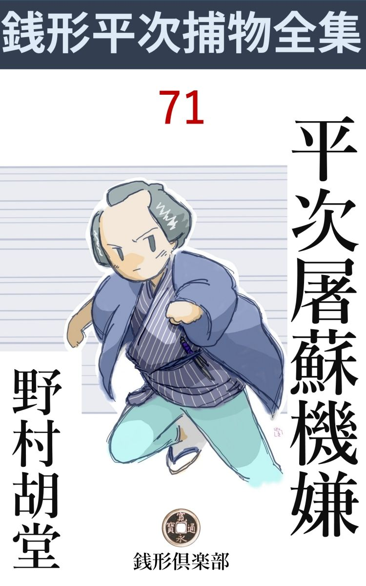
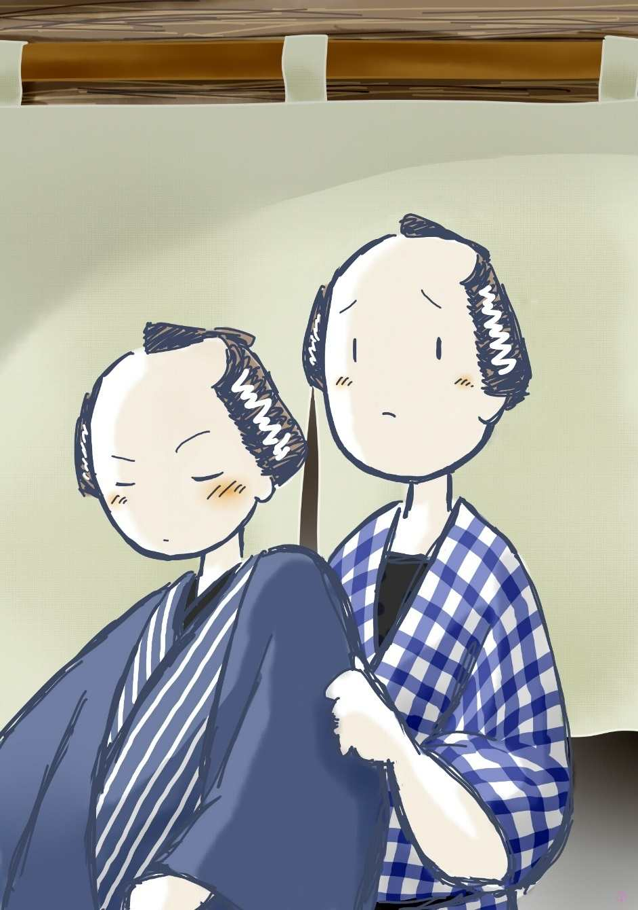

| 平次屠蘇機嫌: 銭形平次捕物全集第71話 (銭形倶楽部) | |
| 野村胡堂 | |
| ZENIGATA CLUB (2018) | |

一
元日の昼下り、八丁堀町御組屋敷の年始廻りをした銭形平次と子分の八五郎は、海 賊 橋 を渡って、青物町へ入ろうと言うところでヒョイと立止りました。
「八、目出度 いな」
「へエ------」
ガラッ八は眼をパチパチさせます。正月の元日が今はじめて解った筈もなく、天気は朝っからの日本晴れだし、今さら親分に目出度がられるわけはないような気がしたのです。
「旦那方の前 じゃ、呑んだ酒も身につかねえ。ちょうど腹具合も北山だろう、一杯身につけようじゃないか」
平次はこんな事を言って、ヒョイと顎 をしゃくりました。成程、その顎の向った方角、活 鯛 屋敷の前に、いつの間に出来たか、洒 落 た料理屋が一軒、大門松を押っ立てて、年始廻りの中食で賑わっていたのです。
「へエ------、本当ですか、親分」
ガラッ八の八五郎は、存分に鼻の下を長くしました。ツイぞこんな事を言ったことの無い親分の平次が、与力笹野新三郎の役宅で、屠 蘇 を祝ったばかりの帰り途に、一杯呑み直そうという量見が解りません。
「本当ですかは御挨拶だね。後で割前を出せなんてケチな事を言う気遣いはねえ。サア、真っ直 ぐに乗り込みな」
そう言う平次、料理屋の前へ来ると、フラリとよろけました。組屋敷で軒並嘗 めた屠 蘇 が、今になって一時に発したのでしょう。
「親分、あぶないじゃありませんか」
「何を言やがる。危ねえのは手前 の顎だ、片付けて置かねえと、俺の髷節に引っ掛るじゃないか」
「冗談でしょう、親分」
二人は黒板塀をめぐらした、相当の構 の門へつながって入って行きました。
真新しい看板に「さざなみ」と書き、浅黄 の暖簾に鎌 輪 奴 と染め出した入口、ヒョイと見ると、頭の上の大 輪飾 が、どう間違えたか裏返しに掛けてあるではありませんか。
「こいつは洒落ているぜ、------正月が裏を返しゃ盆になるとよ。ハッハッ、ハッハッ、だが、世間付き合いが悪いようだから、ちょいと直してやろう」
平次は店の中から空 樽 を一挺持出して、それを踏台に、輪飾りを直してやりました。
「入らっしゃい、毎度有難う存じます」
「これは親分さん方、明けましてお目出度うございます。大層御機嫌で、へッ、へッ」
帳場にいた番頭と若い衆、掛け合いで滑らかなお世辞を浴びせます。
「何を言やがる、身銭を切った酒じゃねえ、お役所のお屠蘇で御機嫌になれるかッてんだ」
「へッ、御冗談」
平次は無駄を言いながら、フラリフラリと二階へ------
「お座敷は此方でございます。二階は混み合いますから」
小女が座布団を温めながら言うのです。
「混み合った方が正月らしくて宜いよ。大丈夫だ、人見知りをするような育ちじゃねえ。------尤もこの野郎は酔が廻ると噛み付くかも知れないよ」
平次は後から登って来るガラッ八の鼻のあたりを指すのでした。
小女は苦 んがりともせずに跟いて来ました。二階の客は四組十人ばかり、二た間の隅々に陣取って正月気分もなく静かに呑んでおります。
「そこじゃ曝 し物見たいだ。通りの見える所にしてくれ」
部屋の真ん中に拵えた席を、平次は自分で表の障子の側に移し、ガラッ八と差し向いで、威勢よく盃を挙げたものです。
「大層な景気ですね、親分」
面喰ったのはガラッ八でした。平次のはしゃぎ様も尋常ではありませんが、それより胆を冷したのは、日頃堅いで通った平次の、この日の鮮 やかな呑みっ振りです。
「心配するなよ。金は小判というものをフンダンに持って居るんだ。------なア八、俺もこの稼業には飽々 してしまったから、今年は一つ商売替をしようと思うがどうだ」
「冗談で------親分」
「冗談や洒落で、元日早々こんな事が言えるものか。大真面目の涙の出るほど真剣な話さ。ね、八、江戸中で一番儲かる仕事は一体何んだろう。------相談に乗ってくれ」
そう言ううちにも、平次は引っ切りなしに盃をあけました。見る見る膳の上に林立する徳利の数、ガラッ八の八五郎は薄寒い心持でそれを眺めて居ります。
「儲かる事なんか、あっし がそんな事を知っているわけが無いじゃありませんか」
「成程ね。知って居りゃ、自分で儲けて、この俺に達引 いてくれるか。------有難いね、八、手前の気っぷに惚れたよ」
「------」
ガラッ八は閉口してぼんのくぼ を撫でました。
「------尤も、手前の気っぷに惚れたのは俺ばかりじゃねえ。横町の煮売屋のお勘ん子がそう言ったぜ。------お願いだから親分さん、八さんに添わして下さいっ------てよ」
「親分」
「悪くない娘だぜ。少し、唐 臼 を踏むが、大したきりょう さ。何方を見て居るか、ちょっと見当の付かない眼玉の配りが気に入ったよ。それに、あの娘はときどき垂れ流すんだってね、飛んだ洒落た隠し芸じゃないか」
「止して下さいよ、親分」
「首でも縊 ると気の毒だから、何んとか恰好をつけておやりよ、畜生奴」
「親分」
ガラッ八はこんなに驚いたことはありません。銭形の平次は際 限 もなく浴びせながら、滅茶滅茶に饒舌 り捲って二階中の客を沈黙させてしまいました。
四組のお客は、それにしても何と言うおとなしいことでしょう。そのころ流 行 った、客同士の盃のやりとりもなく、地味に呑んで、地味に食う人ばかり。そのくせ、勘定が済んでも容易に立とうとする者はなく、後から後からと来る客が立て込んで、いつの間にやら、四組が六組になり、八組になり、八畳と四畳半の二た間は、小女が食物を運ぶ道を開けるのが精一杯です。
「なア、八、本当のところ江戸中で一番儲かる仕事を教えてくれ、頼むぜ」
平次はなおも執拗 にガラッ八を追及します。
「泥棒でもなるんですね、親分」
ガラッ八は少し捨鉢になりました。
「何んだとこの野郎ッ」
平次は何に腹を立てたか、いきなり起上ってガラッ八に掴みかかりましたが、さんざん呑んだ足許が狂って、見事膳を蹴上げると、障子を一枚背負ったまま、縁側へ転げ出したのです。
「親分、危ないじゃありませんか」
飛びつくように抱き起したガラッ八、これはあまり酔っていない上、どんなに罵 倒 されても、親分の平次に向って腹を立てるような男ではありません。
「ああ酔った。------俺は眠いよ、ここで一と寝入りして帰るから、そっとして置いてくれ」
障子の上に半分のしかかったまま、平次は本当に眼をつぶるのです。
「親分、------さア、帰りましょう。寝たきゃ、家に帰ってからにしようじゃありませんか」
「何を。女房の面を見ると、とたんに眼がさめる俺だ。お願いだから、此処で------」
「親分、お願いだから帰りましょう、さア」
ガラッ八は手を取って引き起します。
「よし、それじゃ素直に帰る。手前 これで、勘定を払ってくれ。言うまでもねえが、今日は元日だよ、八、勘定こっきり なんて見っともねえことをするな」
「心得てますよ、親分。------小判を一枚ずつもやりゃ宜いんでしょう」
「大きな事を言やがる」
ガラッ八は平次を宥 めながら、財布から小粒を出して勘定をすませ、板前と小女に、機 み過ぎない程度のお年玉をやりました。
「あ、親分、そんな事は、婢 にやらせて置けば宜いのに------危ないなアどうも」
八五郎もハッとしました。平次は覚束ない足を蹈 締めて、自分の外した障子を一生懸命元の敷居へはめ込んで居るのです。
「放って置け。俺が外した障子だ、俺が直すに何が危ないものか。おや、裏返しだぜ。骨が外へ向いてけつかる、どっこいしょ」
平次はまだ障子と角力 を取って居ります。
二
八五郎は平次を引っ担ぐようにして、どうやらこうやら帳場まで降りて来ました。
帳場に坐って居るのは、中年の番頭が一人。
「お帰りで？ 親分さん、毎度有難う存じます。又どうぞお近いうちに」
「飛んだ騒がせたね、済まねえ」
平次はフラフラと首をしゃくって、草履を突っかけます。鼻 緒 がなかなか足の指にはまりません。
「つまらないもので御座いますが、どうぞお手拭 きになすって下さいまし」
番頭は帳場の側へ二た山に積んだ、お年玉の手拭のうちから白地のを二本取って、平次と八五郎に渡しました。
「有難てえ、遠慮なしに貰って行くぜ。ところで番頭さん、俺はこう見えても大の親孝行者なんだ」
「へエ、へエ、結構なことで------」
「お袋は取って六十七だが、白地の手拭は汚れっぽいからと言って、浅 黄 の手拭でなきゃ、どうしても使わねえ」
「------」
「お安い御用だ。ひょいと一本だけ、その浅黄の方と換えてくんな」
平次は貰った手拭を下へ置いて、番頭の方へ手を出しました。
「御冗談で、------親分さん。その白地の方が品がぐっと良くなりますよ。浅黄は染も地も悪くなりますが」
「その地の悪いのが好きなんだ。どうも手拭の良いのは、顔の皮を剝いて、始末にいけねえ」
「飛んでもない。これは出前の注文に入らっしゃる御近所の衆や、お使の方に差上る分で------」
「そんな事を言わずに、頼むから一本」
平次は根気よく絡み付きます。生 酔 らしい執拗さに、番頭はすっかり持て余しましたが、小腹が立ったものと見えて、手拭の山を後に庇 うように、頑として平次の望みを断わり続けるのでした。
「親分、宜い加減にして帰りましょう。浅黄の手拭が要るならその辺で二三反買って行こうじゃありませんか」
見兼ねてガラッ八が口を出します。
「何だ、人の財布を預かっていると思って、いやに大束 を決めるじゃないか------まア宜いや、手拭一と筋で喧嘩にもなるめえ、素直に帰ろう」
「危ない、そこは敷居ですよ、親分」

あんよは上手------の形で、ようやく平次を外に伴れ出したガラッ八、日本橋を越してホッとしました。
「八」
「へエ------」
「誰も見ちゃ居ないな」
「へエ------」
神田が近くなると、平次の態度は、俄然変ったのです。
「浅黄の手拭を出しな」
「へエ------」
「番頭と揉んでいるうちに、手前懐へ一本忍ばせたろう。------あんな隠し芸があるとは知らなかったよ」
平次はヒョイと手を出しました。しゃん とした足取り、顔の色も、身体の安定も、日頃の平次と少しも変りません。
「浅黄の手拭に曰 くがあるだろうと思って、一本持って来ましたよ。そうでもなきゃ、親分は何時まで番頭とやり合って居るか解らねえ」
ガラッ八は懐から浅黄の手拭を一と筋、のし紙に包んだままのを出しました。
「手前の指先の働きを見屈けたから、俺は番頭に絡 むのを切上げたんだ。大した腕だぜ八、岡っ引よりあの方が柄に合やしないか」
「冗談でしょう。------ところで、親分は酔っちゃ居なかったんで？」
ガラッ八は先刻から、打って変った平次の様子が不思議でなりません。
「本当に酒を呑んだのは、吸物椀と盃洗と、吐 月 峯 さ」
「へエ------」
「俺は三猪口 とは呑んじゃいねえ」
「すると？」
「間抜けだなア。------あの家を、不思議だとは思わなかったのか、手前は？」
「へエ------」
ガラッ八にはまだ解りません。
「冒頭 から、話そう。------第一番に、入口の輪飾りが引っくり返って、裏の方を見せて居たろう」
「へエ------」
「縁喜 物を裏返しに掛けるあわて者が何処の世界にあるものか------空樽を踏台にして、やっと手の届くところだから、子供のしたことじゃねえ」
「成程ね」
ガラッ八は長い顎 を撫でました。
「それ丈 けなら物の間違いとも思うが、------表二階の障子が一枚、裏返しになって居たのに気が付いたか」
「そう言えば、親分の倒した障子を、そのまま敷居へはめたら、骨の方が外を向いてましたね」
ガラッ八は、あの時の平次の酔態 をはっきり思い出しました。
「客商売の家が、元日早々、障子を裏返しにして置くという法はないよ」
「フ------ム」
ガラッ八は鼻の穴をふくらませました。平次の話がしだいに重大さを加えるので、そっと後を振り返りましたが、ここへ来るともう元日の街も思いのほか淋しく、廻礼の麻裃 や、供の萌 黄 の風呂敷が、チラリホラリと通るだけ、両側の店も全く締めて、松飾りだけが、青々と町の風情を添えております。
「たったそれだけで、俺は素通りが出来なくなった。屠蘇機嫌と言った顔で、輪飾りを引くり返したり、障子をわざと外して、裏表を直したり、飛んだ生 酔 の芝居をしたが、------勘定を済まして、外へ出て振り返ると------」
「------」
「輪飾りはやはり裏返しになっていたし、二階の障子も、真ん中の一枚は、骨が外へ向いて居たよ」
「へエ------」
「手前は其処までは気が付かなかったろう」
「恐れ入った。親分、もう一度引返して様子を見ましょうか」
「馬鹿、この上相手に要心させてたまるものか。そうでなくてさえ、俺を平次と見破ったんじゃあるまいかと、大ビクビクものだったぜ」
それにしても、『さざなみ』の謎は解けそうもありません。
「何んだってそんな事をしたんでしょうね、親分」
「それが解らねえ」
平次は往来の真ん中で腕組をしてしまいました。
「輪飾りを引っくり返したり、障子を裏返しにすると、何かの禁 呪 になるでしょうか。今年は流行病 があり相 だからとか何とか」
「そんな馬鹿なことがあるものか。その上、あんなに立て混んでいる客が、元日だと言うのに、少しおとなし過ぎたよ」
「------」
「場所は海賊橋だ。------街を通る人から、たった一と目で見える輪飾りと障子に細工があったんだぜ------」
二人の足は、何時の間にやら、平次の家へ------路地を入っておりました。
「親分、その手拭に何かありゃしませんか」
「それだよ、------ともかく、お屋敷へ帰ってからとしようぜ」
「へッ、北の方お待兼ねと来やがる」
「殴 るよ、この野郎」
噂をされる女房のお静は、この時まだ若くも美しくもあったのです。
三
「どうだい八、番頭が物惜みをしただけに、手が混んでいるじゃないか」
平次は浅黄の手拭を畳の上に拡げました。
「成程ね、十二支と江戸名所尽 しだ」
手拭は一面の模様で、細かく十二に割った区 画 の中に、十二支の動物や、塔や、橋や、鳥居や、人物が、統一も順序もなく並べてあるのです。
「江戸名所に、鍋 釣 や賽ころ は無いぜ」
それ以上は二人にもわかりません。とにかく、最初の一と区画は、塔と飛んでいる動物と、橋の欄 干 があるだけ。
「こいつは親分、両国橋から見た浅草の五重の塔じゃありませんか」
「飛んでいるのは」
「鳶 か何かで」
「鷗 なら判っているが、------恐ろしく腰の細い、足の長い鳶じゃないか。まるで蜂か蚊だぜ」
「------」
「兎に角、この手拭を持って行って、何処で染めたか突き止めてくれ。端 っこに印があるから、商売人が見たら判るだろう。紺屋が判ったら、誂主 を訊くんだぜ」
「へエ」
「それから、正月早々気の毒だが、暫らくの間、あの『さざなみ』を見張って居て貰い度いな。手が足りなかったら、下っ引を狩り出しても構わねえ」
「そんな大物でしょうか、親分」
「博奕 宿か、大名の洒落か判らないが、とにかく、お膝元に不似合なものらしいよ」
二人はそれっ切り別れました。
平次はそれからすっかり寝正月をして、三日の朝不精床を這い出すと、
「お早よう」
ガラッ八の八五郎が忠実 な顔を持って来たのでした。
「何だい、八、年始はもう済んだ筈だぜ」
平次は啣楊枝 で淡い陽の中から声をかけます。
「あれッ、忘れちゃ情けないね。親分、海賊橋の輪飾り」
「あ、そんな事もあったようだね。三日二た晩寝通して見るが宜い。御用のことはともかく、女房の面も忘れるよ」
平次はそんな事を言いながら、せっせと遅い朝の支度をしている、お静の素知らぬ顔をチラリと見やります。
「へッ、惚気を聴きに来たんじゃねえ。手拭の誂主は判りましたぜ、親分」
「誰だ？」
「さざなみ の番頭で」
「馬鹿野郎、『さざなみ』のお年玉を、『さざなみ』の番頭が誂えるに、何の不思議があるんだ。もう少し、詮 索 をして見ろ」
「しましたよ、親分、驚いちゃいけませんよ」
「脅かすなよ」
「こいつを驚かなった日には木戸は要らねえ。『さざなみ』は昨日のうちに店を畳みましたぜ」
「何だと」
「大晦日に店を開いて、正月の二日に店仕舞をしたと聴いたら、親分だって驚くでしょう」
「よし、すぐ行って見よう。大家は何処だ」
「裏の倉賀屋------質屋が家主で」
それを半分訊いて、平次はもう出かける支度です。
「あれ、お前さん、まだ朝飯も、済まないじゃありませんか」
驚いたのはお静でした。
「お前一人で済ましておけ。------羽織は何処だ、------紙入と手拭は？」
二人は呆れるお静を後に、真 に鳥のように飛んで行ってしまいました。
四
海賊橋へ行って見ると『さざなみ』は店を締めて、近所で訊いても、何処へ引越したとも解りません。『さざなみ』の真裏、庭つづきの質屋------倉賀屋------へ行って訊くと、
「どうも驚きましたよ。暮の二十五日に来て、正月早々店を開きたいからと、一両二分で貸しました------へエ、店賃は確かに一と月分頂戴しましたが、店を開いて、たった一日で、どうも商売は思わしくないから、故郷の府中へ帰ると言い出すじゃございませんか、あんな店 子 は見た事もありません」
主人の総七は、五十恰好のよく練れた人相を、解き難い謎に曇らせます。
「借り手は何んな人間で？」
「主人は顔を見せません。番頭は四十がらみの、世辞 の宜い男で」
それなら平次もよく知っております。
「雇人は？」
「下足が一人、板前が二人、下女が二人、それにお座敷女中が三人位はいたようでございます」
「あれほどの店を貸したんだから、証人があるだろう」
「それが、その、江戸へ出たばかりで、知合が無いからと言うお話で、その代り敷金を半年分九両入れました。------尤もそれは昨夜お返し申しましたが」
「それにしちゃお年玉の手拭を誂えたのは可笑しいな。暮の二十五日じゃ間にあわねえ筈だ」
「へ------エ？」
独り言ともなく、言った平次の言葉、主人の総七も何やらピンと来た様子です。
「何んか書いたものは無いだろうか、請取とか、名札とか？」
「生憎何んにもございません」
これでは取付く島もありません。平次もしばらくは、煙草の烟 を輪に吹くばかり。
「それじゃ、あの店を私に貸してはくれまいか」
平次は大変なことを言い出しました。
「それはもう、親分さんの御用と仰っしゃれば、決して否応は申しません。が、生憎『さざなみ』が、立ち退くと入れ違いに、借手が付いてしまいました」
「はて？ 何処の何と言う人だえ」
「何でも、古道具の糶屋 さんだそうで、五日にはきっと越して来るからと、手金まで置いて行きました」
「ちょいと、その手金を見せて貰おうか」
「へエ------」
主人は帳場格子の中で、何やらガチャガチャさせると、四両二分の金を持って来て、平次の前に並べます。
「この金に目印でもあるのかい」
「何にも御座いません」
「それじゃ、どうして金箱の中から選り出したんだ」
「へエ------」
こうなると、少しも要領を得ません。
「五日に越して来るなら、今日は三日だから、四日一日は空いて居るだろう」
「へエ------」
「その空いてる四日一日だけ貸して貰おうか。五日の朝のうちには、綺麗に引払って行くから」
「へエ------」
倉賀屋総七は、あまり気の進まない様子ですが、顔の良い御用聞の申出を断わるほどの勇気もなかったのです。
「店賃は一両二分、一と月分に負けて貰おうか。------もっとくれと言われても、それで正月の小遣い総仕舞だ」
平次はそんな事を言って、一両二分の金を取出します。
「それには及びませんよ、親分さん。たった一日位のことなら、どうぞ御自由にお使い下すって」
「いや、借りた家の店賃は、やはり払わないと気が済まねえ。そのかわり一筆請取を書いて貰おうか」
「それじゃ、しばらくお預り申します」
平次の引きそうもない様子を見ると、主人の総七は渋々ながら一筆請取を書いて出しました。
五
「八、いよいよ商売替だよ」
「へエ------」
「気の無 え返事をするなよ、何んとか景気をつけてくれ」
「何をやらかすんで」
倉賀屋の帰途 、平次はこんな事を言い出すのです。
「判っているじゃないか、『さざなみ』の後を借りたんだ。------当節は何んと言っても儲けの早いのは食物屋さ」
「驚いたなア」
「驚くことなんかあるものか。手前 庖丁 の心得はあるかい」
「そんなものはありゃしません。十手小太刀の心得なら少しはあるが------」
「生意気なことを言うな。どうせたった一日だ。俺は帳場へ坐るから、手前は板前よ。お静は下女でお品さんに手伝って貰って、これはお座敷女中」
「大変なことになったね、親分」
ガラッ八の驚き呆れる間に、平次は着々とその支度を整えました。尤もガラッ八の板前では納まりません。知合の料理屋から、手の空いて居る限りの人数をカキ集め、座布団も、火鉢も、膳椀も一日のうちに運び入れて、正月の四日には、もう夜が明けると一緒に店を開いたのです。
「親分、とうとう真物 ですね」
「ざっとこんなものだよ、八、表を見てくれ」
平次に言われて表に廻った八五郎。
「あッ」
さすがに驚きの声をあげました。
「どうだ八」
「あの通りだ、輪飾りも、------二階の障子も」
輪飾を裏返しに、二階の障子の骨は此方を向いて居るのです。
「家主 さんへ行って、火鉢を二つ三つと、帳場で使う当り箱と、掛物を一幅借りて来い------何だって構わないとも、山水でも花鳥でも、お仏様でも、------相手は質屋だ。それ位の品がない筈は無いよ」
「応 ッ」
こうなるとガラッ八も一生懸命でした。
まだ廻礼のある時分で、巳刻 頃からボツボツ客が来ますが、本職の板前や女中が入っているので、帳場の平次少しも驚きません。
昼頃になると、家主の主人総七が、ブラリと様子を見に来ました。
「親分さん、商売はどんな様子で？」
「お蔭様で大繁昌です。いよいよ私も商売替をして、ここへ根を生やしましょうか」
「飛んでもない」
平次のニコニコした顔を、凡そ、見当のはずれた様子で眺めながら、倉賀屋の主人は帰って行きました。
「八」
「へエ------」
「何人来て居る」
「六人ばかり、皆んなこの居廻りの下っ引ですよ」
「それで宜い、江戸橋と、日本橋の御高札場と、万町 と、青物町と、二丁目の河岸っ端 へ一人ずつ張り込ませてくれ。立ち話をする奴か、往来の人へ合図をする者があったら、構わねえから、邪魔をするんだ。時と場合じゃ引っ括 っても宜い」
「へエ」
「これは大きな声じゃ言えねえが、倉賀屋の丁稚小僧が外へ出たら、一々後を跟 けるんだぜ」
「へエ------」
八五郎を出してやると、平次はまた帳場に脂 下 ります。
新店のせいか、客は一向 来ません。------いや、新店でも元の『さざなみ』はあんなに客が立て混んだのです。今度は一体何としたことでしょう。
「入らっしゃい」
「許せよ」
ズイと入って来たのは、虚 無 僧 が二人。
「どうぞお通りを」
「遅れて心配いたした。元日という約束であったが、箱根の関所で手間取って、今日ようやく江戸へ入った始末じゃ」
何が何やら解りません。
「御苦労様で------さア、どうぞ二階へ、お通り下さいまし」
平次は一生懸命でした。が、天蓋 の中の顔は、見る工夫もありません。
「手形はこれだ」
「へエ------確かに頂戴いたします」
小さく畳んだ紙片、平次は押し戴くように懐中へ入れます。
「許せよ」
二人の虚無僧は天蓋を冠ったまま、静かに階子 段を踏んで二階へ昇りました。
平次はその後ろ姿を見送ってそっと紙片 を開きました。中には月日と仮名と数字ばかり。
二月十八日（ウ）三五八
四月 六日（サ）一〇〇
同 二十九日（カ）一〇
七月二十八日（サ）八
九月十七日（ス）六五
十月 七日（ハ）六
以上七項が書いてあるのです。
半刻ばかりの後、軽い食事を済ました二人の虚無僧は、綺麗に勘定を払って二階から降りて来ました。
「有難う存じます、またどうぞ」
少しギコチないが、精いっぱいの世辞をふり撒 く平次に、
「お年玉を貰おうかの」
若い方の虚無僧は手を出したのです。
「------」
平次はハッとしました。何も彼も残るところ無く用意を整えた積りでしたが、お年玉の白い手拭と浅黄の手拭だけは、染める暇がなかったのでした。
「例年のことだが------」
平次の躊躇 するのを見て、虚無僧の一人は屹となりました。
「お生憎様ですが、元日一日で出払ってしまいました」
「何、出払ってしまった。そんな筈は無い。我々を何んと心得て仲間外れにするのだ」
「飛んでもない------あ、御座いました。一筋だけ残って居りました。少し皺くちゃになりましたが、これで御勘弁を願います」
平次は元日ここの帳場から、ガラッ八がくすねた浅黄の手拭を懐から出して、折目正しく畳み直し、用意の熨 斗 紙 に包んで、恐る恐る差出しました。
「よしよし、皺になっても、貰いさえすれば。------それではまた逢おう」
「有難うございます。それでは、お静かに」
振り返りもせずに立去る二人の虚無僧を見送って、平次は思わず冷汗を拭きました。
「八、八はいないか」
「親分」
ノソリと物蔭から出たのはガラッ八です。
「あの二人の虚無僧の後を跟けてくれ」
「へエ------」
ガラッ八は猟犬のように、尻を七三に引っからげて飛出します。
六
二た刻ばかり後、今日一日の店を仕舞い、借りた物は返し、傭 った人には手当をやっているところへ、ガラッ八の八五郎は濡れ鼠のようになって飛込んで来ました。
「あッ、ブルブル。あの若い虚無僧の腕には驚きましたよ、親分」
「ちょっかいを出して、大川へでも投り込まれたんだろう」
平次は案外驚いた顔もしません。
「ちょっかいなんか出せるものですか。神妙に後を跟けて行くと、亀戸へ行って、深川へ廻って、それから永代を渡ってまた此方へ戻るじゃありませんか」
「どんな家を訪ねて廻ったんだ」
「何処へも行きゃしません。天神様へお詣りして、落書を一と亘 り読んで、矢立を出して柵へなんか書いて、八幡様へ行って同じことをして、それから永代橋の欄 干 の裏へなんか細工をして」
「フーム」
平次の顔は次第に真剣になります。
「立去った後、その欄干の下をヒョイと覗くと、いきなり若い虚無僧が戻って来て、先刻から我々両名の後を跟けて居るようだ。不埒千万------だって言やがる」
「投げられたのか」
「へエ------十手を出す暇もありゃしません。いきなり一本背負 に、欄干を越してドブンとやられたには驚きましたよ」
「危いね」
「親分の前だが、永代の下の水は、思いの外塩っぱい」
「馬鹿野郎」
そう言いながらも、寒空にガタガタ顫えている八五郎の着物を脱がせ、みんなから一枚ずつ剝いで、どうやらこうやら暖めた上、倉賀屋から布団を借出して来て、階子の下の六畳に寝かしました。
「風邪を引きそうだぜ、親分」
「今熱燗 で一本やるから、それを呑んで寝てしまえ。俺はこれから八丁堀へ行って、明日の朝迎いに来る」
「少し淋しいね、親分」
「何を、子供じゃあるまいし」
平次は多勢の手伝いを皆な帰した上、八五郎一人を留守番にして、そこから遠くない八丁堀組屋敷へ急ぎました。
与力笹野新三郎に逢って、
「旦那、この日付と数に、お心付きはございませんか」
虚無僧が手形と言って置いて行った紙片を見せました。笹野新三郎しばらく眺めて居りましたが、
「平次、これは何処から手に入れた」
膝の上において容易ならぬ眼を挙げます。
「虚無僧が置いて行きました。尤も私を仲間と間違えたようで」
「これは大変なものだぞ。------ここじゃ詳しいことは解らない。御数寄屋橋へ行って、書き役の方に伺って見るが宜い」
「有難うございます、それじゃ」
「待て待て、俺も行こう。これは近頃の大捕物になるかも知れない」
笹野新三郎、即刻支度を整え、平次ともども御数寄屋橋内、南奉行所に急ぎました。
書き役は留守。
思いの外手間取って、添役に記録を調べさせると、重大事件の輪郭が次第に判って来ます。
「これは大変でございますよ、笹野様。昨日の二月十八日は、東海道宇津谷峠 で金飛脚が殺され、三百何十両の金が取られて居ります」
「えッ」
「それから四月六日には薩捶峠 で商人 が殺され、路用を奪われましたが、金高はわかりません。その月二十九日には、蒲 原 の酒屋に押込が入って、売溜を奪って逃げ、七月二十八日は小 夜 の中山で追 剝 が旅人を脅かし、九月十七日には飛んで鈴鹿峠 で大阪の町人夫妻が殺されて大金を取られ、十月七日は、箱根で一人旅の女が身ぐるみ剝がれて居ります」
「それは大変だ」
と笹野新三郎。
「して見ると、あの『さざなみ』は泥棒の顔繋 をする場所だったのですね」
銭形平次はこんな事だろうとは思いましたが、いまさら事件の重大さに驚くばかりです。多分、全国の泥棒どもが年に一度の顔寄せに、お互の功名を誇り合った上、獲物を何かの方法で分配でもするのでしょう。
「平次、しっかりやれ、これは容易ならぬことだぞ」
笹野新三郎は平次の腕に期待をかけます。
七
平次は笹野新三郎と打合せて、八丁堀を繰出したのは暁 の寅刻 。霜を踏んで倉賀屋から、『さざなみ』の前後を、すっかり取 囲 ませました。
『さざなみ』に行って一応ガラッ八の様子を見ようと思いましたが、なまじそんな事をして、曲者に用心させてはと、手先捕方を隙間もなく配置し、ともかく夜の明けるのを待つことにしたのです。
「何と申しても、怪しいのは倉賀屋でございます。自分の持家を寄合に使って居るのを、知らない筈はないのに、何 彼 と胡 麻 化 すことばかり考えて居るようで、あの総七という主人 は油断がなりません」
平次は倉賀屋へ第一番に疑 をかけた上、手に及ぶかぎりの下っ引を動員して、二人の虚無僧の落付いた先を調べさせました。
「夜が明け切っては、近所の家で驚く。もう宜かろう平次」
笹野新三郎は若いだけに功名を急ぎます。
「それッ」
平次の号令につれて、前後左右から倉賀屋の囲みを絞ったのは寅刻 半 頃。
「御免よ。板原左仲様御屋敷から来たが、かねて、入質の大小、今日の御登城に御用いになる相 だ。すぐ出して貰いたい」
「板原左仲様------と仰しゃる方は存じませんが」
臆病窓を開けた手代、淡い暁の光の中に立って居る、お屋敷者らしい男を、不審そうに見やりました。
「そんな事があるものか、御身分柄内々の質入だ。主人に逢えば判る、潜戸 をちょいと開けてくんな」
「へエ------」
手代は争い兼ねて潜戸を開けると、
「御用ッ」
「神妙にせい」
一隊の人数が、礫 のように乱れ入ります。
が、しかしこの襲撃も、飛んでもない結果になってしまいました。折角狙って来た倉賀屋の主人総七は奥の部屋で寝たまま刺し殺され、夥 しい金と、番頭の九郎助が行方不明になって居たことが判っただけだったのです。
家捜しをして見ると、蔵の中はお触書にある贓品だらけ。
「やはり、この総七は泥棒の片割れでした。------質屋になって、永いあいだ仲間の盗んだ品を捌 いたのでしょう」
平次の解ったのは、たったこれだけです。
「番頭は？」
「仲間割れがしたか------主人 の総七が裏切る様子でもあったので手を廻したのかも解りません」
「引続いて、頼んだ手を緩 めてはならぬ」
与力笹野新三郎は、万事を平次に任せて、朝のうちに引揚げてしまいました。
「ところで、八は何うしているだろう。この騒ぎにも起き出さないのは、余っ程疲れたのかな」
平次は『さざなみ』へ行って見ました。手を掛けると、閉めた表戸はわけも無く開いて、サッと射込む朝の光の中に、布団で昆布 巻 にされた上、丁寧に猿轡ま で噛まされたガラッ八が、階子 の下まで転げて来て、情けない眼を光らしているではありませんか。
「馬鹿野郎、何んてざまだ、一人前の岡っ引が------」
平次は大叱言 を浴びせながらも、表戸をピタリと締めて、手早く八五郎の縄と猿轡を解いてやります。この浅ましい姿を人に見せ度 くなかったのです。
八
しかしこの失敗は事件のクライマックスでした。萎 れ返るガラッ八を連れて神田の家へ引揚げて来た平次は、それから四五日、物も言わずに一と間に籠ってしまったのです。
「親分は？」
お勝手口から臆病らしく顔を出した八五郎が、拇 指をそっとお静に見せたのは、十日の昼過ぎ。
「相変らずよ。腕組みをして、唸ってばかり居るんですもの、------何とかして下さいな、八五郎さん」
恋女房のお静も、すっかり持て余し気味です。
「大丈夫ですか、いきなり怒鳴りゃしませんか」
八五郎はあの失敗以来、すっかり御無沙汰して、この家 の敷居が跨 ぎ切れないような心持だったのです。
「八か、大丈夫だ。噛付きはしないから、入って来い」
奥から思ったよりも晴々しい平次の声。
「へエ------」
ガラッ八は恐る恐る小腰を屈めて、髷節ばかり障子の中へ入れました。
「何んて恰好だい。まア入れ、八」
「へエ------、もう怒っちゃ居ませんか、親分」
「縮 尻 はお互だよ。------ところで八、今日は何日だっけ？」
「正月の十日ですよ、早いもので」
「年寄染 みた事を言うな。------その十日に来たのはお前の運がなかったんだ、これを見てくれ」
「へエ------」
ガラッ八は恐る恐る滑り込みました。平次は畳の上へ置いた半紙へ、変哲なものを書いて一生懸命それと睨めっこをして居るのです。
「これは何だと思う、八」
「橋の欄干 じゃありませんか。------あッ、あのお年玉の手拭の模様を書いたんで？ 親分ですかえ、これは、うめえもんだね」
「お世辞を言っちゃいけねえ。------手拭は虚無僧にやってしまったが、心覚えがあるから、あの模様の一番初めのを書いて見たんだ」
「へエ------」
「ところで。橋の欄干として何処にこんな橋があるだろう」
平次の問は第二段に進みました。
「両国ですよ、間違いはありません。擬寵珠 の形で解りまさア」
「成程、両国かも知れない。------あの辺には見世物と水茶屋ばかりだが、道具屋のあるのを知ってるかい」
「知りませんよ」
「実はな、八、この手拭の染め模様が何かの符牒 に違いないと思って、俺は五日考えたよ」
「へエ------」
平次の根 の強さに、ガラッ八は洒落も出ません。
「お前 は十二支と江戸名所だと言ったが、どうも、そうらしくもねえ。いろいろ考えた末、思い付いたのは、南部の盲暦 だ」
「------」
「奥州の南部には、字の読めない者に読ませるように、------絵で書いた暦がある。------禿頭 に濁りを打って半 夏 と読ませる------と言ったような話を思い出して、俺はさっそく麻 布 の南部様御屋敷へ出かけたのさ」
「へエ、------暦はありましたか」
「あったよ、御用人にお願いする迄も無いや、馬丁 に知ってるのがあるから頼んで一枚貰って来た、これだ」
平次は半紙一枚に刷 った、粗末な木版の盲暦を出して、見せました。刀の大小を並べたり、賽の目や、太鼓や、田植え笠や、塔や、いろいろのものを画いて、庚 申 は何月何日、社 日 は何時、彼岸は何日と判じて読ませるのです。
「これで見ると、十日と読ませるには、塔の蚊を書いて居る手拭の模様の最初のがそれだ。手前 は観音様の五重塔と鳶 だと言ったが、あれは蚊だったよ、八」
「成程ね、道理で無闇に足が長いと思った」
「手拭の模様は十二に分けてあったから、最初は正月と見て宜い、正月の十日というと今日だ」
「------」
妙な緊張に、ガラッ八は唇を嘗めました。
「両国橋の近くに、何かあるに違いない、------どうだ八、この絵 解 は面白かろう」
平次はこんな事を言って落着いて居るのです。
「それじゃ行きましょう、親分、十日の日もあと一刻 で暮れますぜ」
「その暮れるのを待って居るんだ」
「風をくらって逃げたら？」
「大丈夫。お品さんが、利助兄哥の子分衆に言い付けて、両国の橋の見えるところで、二階正面の障子が一枚、裏返しになっている家を、朝っから見張っている筈だ」
「へエ------」
ガラッ八は喫驚 しました。五日籠っていた平次の神 算 鬼 謀 が、日本中の大泥棒の巣を、叩き潰すまでに運んでいたのです。
× ×
その晩、両国の料理屋、鶴喜 の離室を借りて、年に一度の参会を開いていた道具屋の一隊は、石原の利助の子分を先鋒とする、八丁堀の組子に十重二十重に取囲まれ、多勢の怪我人まで拵えて、尽く召捕りになりました。その中には東海道荒しの偽虚無僧二人、木曾荒しの女泥棒、その他五街道の悪者殆んど全部、十五六人にもなりましたが、江戸の老賊、『暗がりの総七』だけはいなかったということです。
銭形の平次は、併 し、これを自分の手柄にはしませんでした。
「輪 飾 りが裏返 になっていたのを見ただけさ、いやはや」
そう言って首筋を掻く平次だったのです。
（編注）
作品中には、身体の障害や人権にかかわる、差別的な語句や表現が見られますが、本書が成立した当時の時代背景等が現代とは異なる古典的な文学作品でもあり、著者が故人でもありますので、底本のままとしました。ご理解、ご諒承のほどをお願い申し上げます。
著者---野村胡堂
挿絵---萩 柚月 © 2017
初出---「オール讀物」昭和十三年一月号 文藝春秋社
底本---「錢形平次捕物全集」第四巻 河出書房 昭和三十一年六月三十日初版
編集・発行 銭形倶楽部